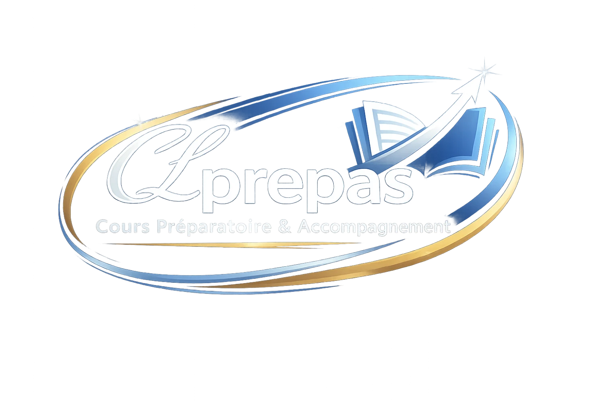

Pour les professionnels
Découvrez les outils IA pertinents pour gagner du temps, mieux produire et mieux décider.

LDP Easy par CLPrepasFormation professionnelle en IA
LDP Easy aide votre activité professionnelle à passer de l'intention à l'action : diagnostic, formation ciblée et accompagnement concret pour intégrer l'IA dans vos usages.
Offre
Découvrez les outils IA pertinents pour gagner du temps, mieux produire et mieux décider.
Structurez un socle commun de compétences IA avec des cas d'usage proches du terrain.
Priorisez les usages, encadrez les pratiques et déployez une culture IA utile et responsable.
Parcours
Contact
Contactez CLPrepas pour définir la formation adaptée à votre besoin.